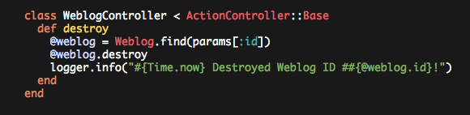

Update: You may want to consider using homebrew to get its version of screen installed and then come back here and pick up the pieces.
brew tap homebrew/dupes brew install screen
I’ve used vim for a long long time. A couple of years ago I enabled syntax coloring, but the defaults aren’t that attractive and recently I’ve begun to envy some of the Textmate color themes, particularly the theme used in Ryan Bate’s Railscasts.
I also use GNU screen to save sessions and because it reduces clutter. Yes, I am probably the last Apple/Rails developer that doesn’t use Textmate :-)
So I found a vim color theme called railscasts and tried it out. And it worked. Sort of. iTerm + vim works. Terminal + vim does not. iTerm + screen + vim does not.
After much googling I figured out that the default ‘screen’ in OSX doesn’t support 256 colors. Annoying.
So I compiled screen from source explicitly enabling 256 color support and now it all works (except via Terminal, but I don’t use Terminal anyway).
Here’s what you need to do to get it working for you:
Install screen using macports and make sure it has 256 color support (it should be enabled by default). Or compile and install screen from source with the following options. These are the options used by the darwin ports version so if you want, just install that. I didn’t want to so built it from source. To get that to work I had to apply darwin’s patches. Here’s the TGZ of screen-4.0.3 with patches applied. I installed into /usr/local so as not to overwrite the default /usr/bin/screen. This may mean you need to update your PATH to search /usr/local/bin before /usr/bin.
$ ./configure --enable-locale \ --enable-telnet \ --enable-colors256 \ --enable-rxvt_osc \ --prefix=/usr/local $ make $ make install
Add the following to your screenrc (i.e. ~/.screenrc). You may need to replace “xterm-color” with whatever iTerm spits out when you do “echo $TERM”. This is what it was for me and I don’t remember setting it explicitly. I suspect I should remove the ‘termcapinfo xterm’ entry, but doesn’t seem to hurt me so I’ve left it.
#terminfo and termcap for nice 256 color terminal # allow bold colors - necessary for some reason attrcolor b ".I" # tell screen how to set colors. AB = background, AF=foreground termcapinfo xterm "Co#256:AB=\E[48;5;%dm:AF=\E[38;5;%dm" termcapinfo xterm-color "Co#256:AB=\E[48;5;%dm:AF=\E[38;5;%dm" # erase background with current bg color defbce "on"
Jim Pitman let me know that (at least for him) he needed to use xterm-color256 where I have used xterm-color. So if it doesn’t work for you, give that a try.
Add this to the top of your .vimrc. It must go before any syntax/color settings (so I am told):
set t_Co=256Download and install a vim color theme into ~/.vim/colors. Assuming you’ve downloaded the ‘railscasts.vim’ theme then in vim you can type the following to load the color theme:
:colorscheme railscastsAnd assuming you have a dark on light terminal setup you’ll get something like the below.
